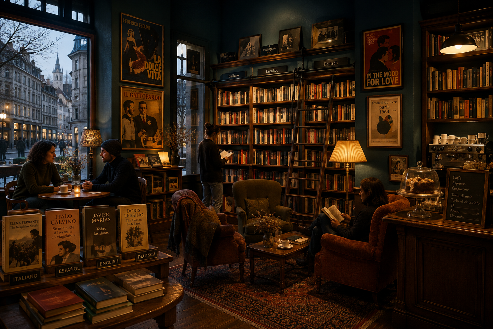

Casa Donatalina
Ein Ort für Menschen, die zwischen Sprachen leben.
Casa Donatalina ist ein Ort aus Büchern, Geschichten und Gesprächen: ein Zuhause, eine Buchhandlung, ein Café und ein Treffpunkt — auch wenn vorerst nur online.
Ein Ort zum Verweilen, Lesen, Stöbern, über Bücher sprechen und andere Menschen kennenlernen, die wie wir zwischen mehr als einer Sprache und mehr als einer Geschichte leben.
Hier kannst du hereinkommen, einen Artikel lesen, ein Buch entdecken, einen Kommentar hinterlassen, einer Geschichte zuhören oder einfach eine Weile bleiben. Und wenn du möchtest, ein Buch mit nach Hause nehmen.

Casa Donatalina entsteht aus einer Familie von Leser/innen, Ärzt/innen, Aktivist/innen, Erzähler/innen und neugierigen Menschen.
Wir glauben an wahre Geschichten.
An die Erinnerung.
An Bücher, die auch nach der letzten Seite weiterleben.
Hier finden Romane, Memoiren, Buchbesprechungen und Gedanken über Literatur ihren Platz.